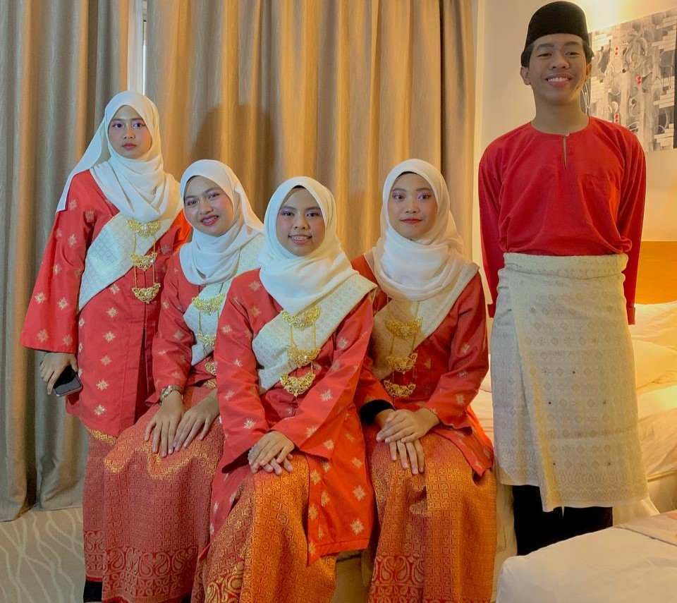
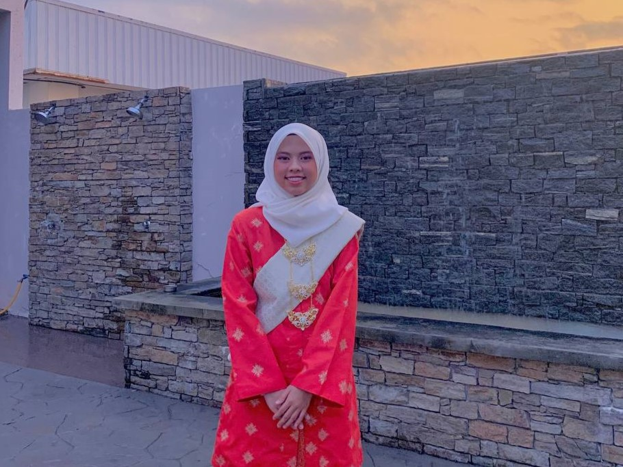
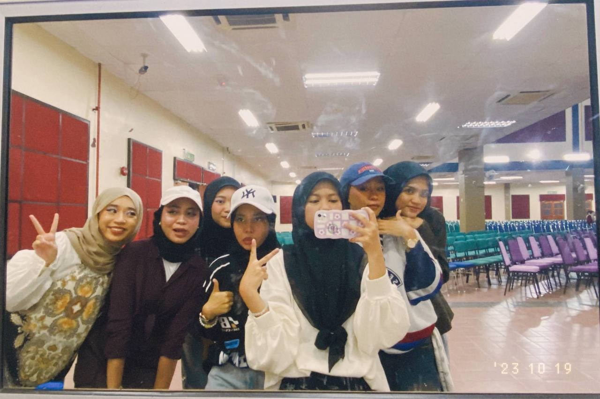
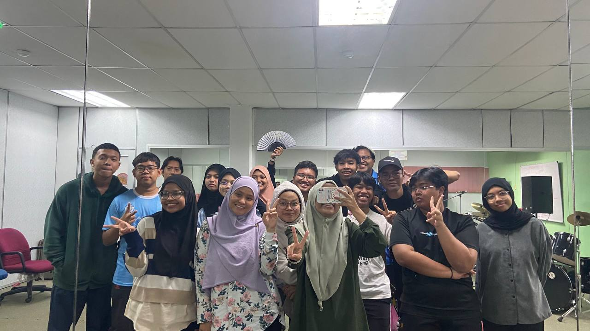
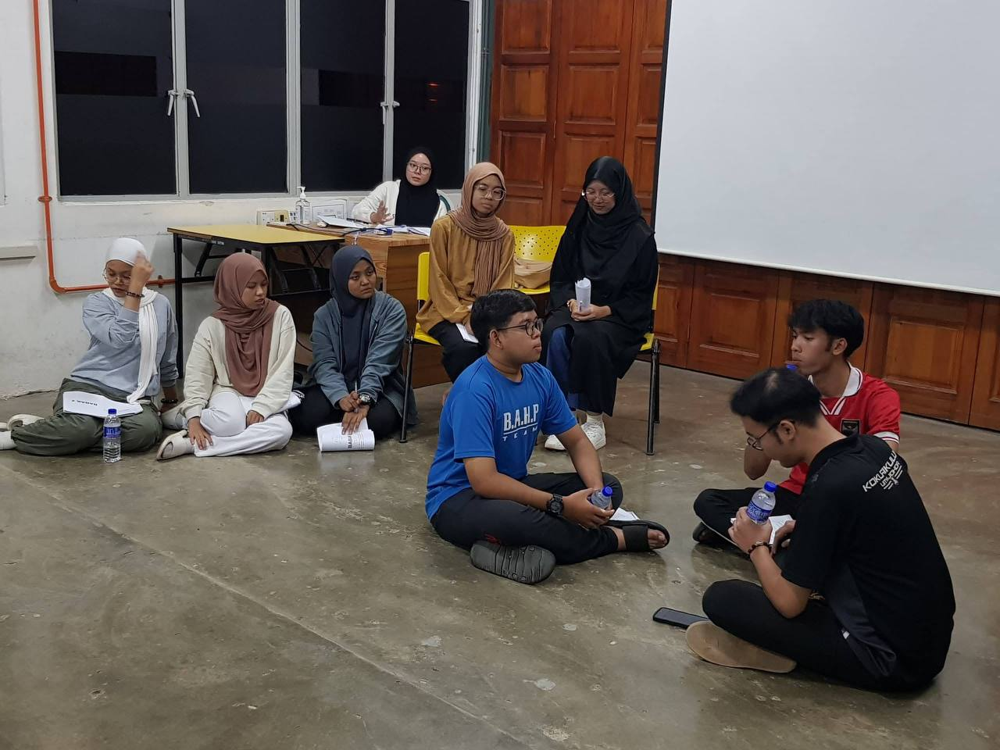

I performed as a traditional dancer for the first time at a VIP hotel in Segamat.

Performing as a traditional dancer was a memorable experience.

Annual General Meeting themed (AGM) Back to the 90s.

PAC Culture Night, Halfmoon PTDI, UiTM Segamat

Theatre bengkel with kordrama UiTM Shah Alam.

Task distribution session for the upcoming theatre.

Training for upcoming theatre.

The first theatre titled "Possible, Mungkin??", in which I portrayed the character Raisa.

The lineup of the Executive Committee Members and Exco for each department.

My second theatre, in which I portrayed the character Naddy.